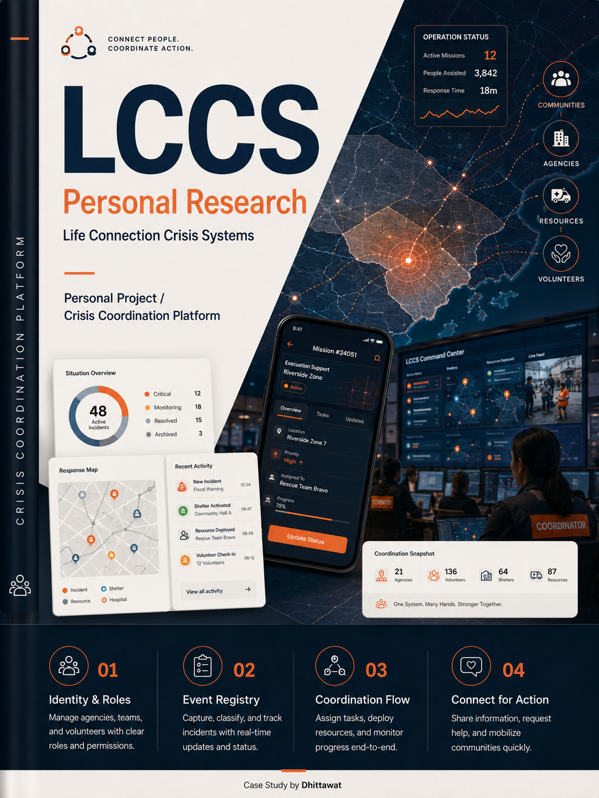

06 / 11
Crisis coordination / Personal research
LCCS Personal Research
Connect people. Coordinate action.
A research concept for shared identity, incident visibility, missions, and resource coordination during urgent events.

- Project
- LCCS Personal Research
- Context
- Life Connection Crisis Systems
- Product
- Crisis Coordination Platform
- Year
- 2026
- Domain
- Crisis Coordination
- Public Response
- Multi-agency Operations
- Platform
- Coordination Platform
- Mission Management
- My role
- Personal Research
- UX Systems Design
- Work area
- Identity & Roles
- Event Registry
- Resource Visibility
- Mission Status
Challenge
Roles, incidents, resources, and community requests can fragment across agencies and channels. Without shared operational visibility, teams lose time aligning action and status.
Approach
The case frames the problem as a connected workflow rather than a screen redesign, focusing on roles, status, information timing, and handoff points.
Outcome
A system concept connecting agencies, volunteers, resources, missions, and communities through a shared event registry and action-oriented flows.
Detail
The concept explores how a crisis coordination platform can help many hands move in the same direction during urgent events.